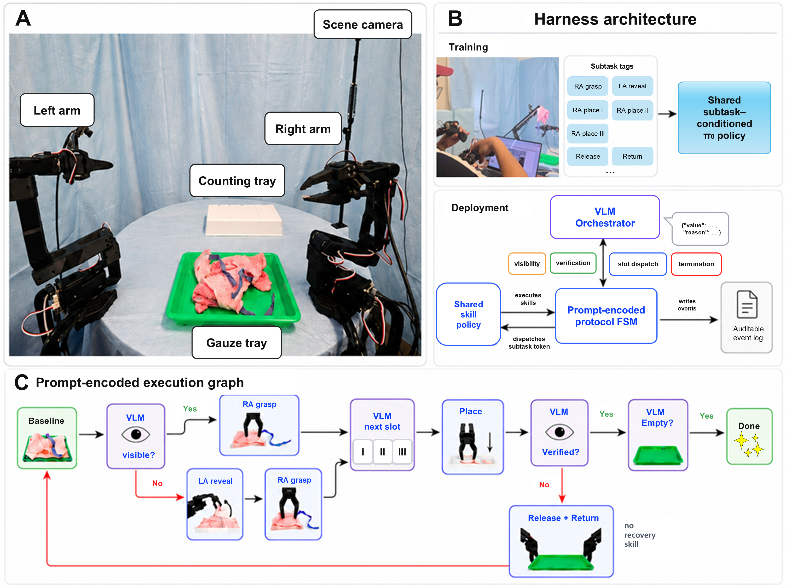

SurgeCount
A Protocol-Guided Composition Harness for Bimanual Surgical Sponge Counting
Datasets and checkpoints will be released upon publication.
Abstract
Surgical sponges are the most common retained foreign object in operating rooms, prevented today by intraoperative counting protocols that combine bimanual handling, ordered placement, and per-step verification. Autonomous gauze counting is a representative real-robot instance of protocol-constrained long-horizon manipulation — a problem class with deformable objects, occluded grasp landmarks, ordered subtasks, and per-step verification gates that no current benchmark captures together and that simulators abstract away.
Across 100 paired-layout real-robot trials (five methods, 20 matched layouts each), four state-of-the-art end-to-end policies trained on the same teleoperation demonstrations cap at 27 of 60 slots filled and 3 of 20 procedures completed. The bottleneck is composition under protocol constraints, not visuomotor capacity. We introduce SurgeCount, a composition harness over a language-conditioned policy with twelve robot actions and a learned stop signal. A stateful vision-language model selects the next subtask at each stopping boundary under a prompt-encoded protocol with per-skill verification gates, and recovery composes from release-and-return subtasks already present in the training set.
SurgeCount fills 47 of 60 slots and completes 12 of 20 procedures, significantly better than the strongest baseline, while adding only operator-entered subtask tags and a hand-written protocol prompt to the shared teleoperation demonstrations. These results identify a practical recipe for protocolized long-horizon manipulation: compose subtask-tagged teleoperation with explicit procedural rules, learned stopping, and visual verification gates.
Composition, not capacity, is the bottleneck
strongest end-to-end baseline
SurgeCount
strongest end-to-end baseline
SurgeCount
Trained on the same teleoperation data, end-to-end policies handle individual skills but cannot chain them under protocol. Our end-to-end π0.5 baseline is implemented from π0 with a trained subtask predictor, following the original π0.5 paper (arXiv:2504.16054). At each action chunk boundary, the overhead image and an umbrella instruction produce subtask text that conditions twelve-dimensional action generation. This baseline has no stop signal and switches its active subtask mid-rollout 18.2 times per trial on average, against 0 for SurgeCount by construction.
How SurgeCount works

System overview. (A) Two SO-101 arms move red-stained gauze from a source tray to a three-slot counting tray, grasping each gauze by its blue radiopaque thread. (B) A language-conditioned policy outputs twelve robot actions and a learned stop signal while running one subtask at a time; at each stop the frozen Gemini VLM selects the next subtask under a prompt-encoded protocol FSM, logging every decision. (C) The orchestrator routes between a visible-thread strategy and an occluded-thread left-arm reveal; both converge on placement and verification, with gate failures triggering composed release-and-return recovery.
1. Learned stop boundaries
A scalar stop signal is learned as the thirteenth action dimension from the existing teleoperation segmentation. It marks the boundary at which the harness selects the next subtask.
2. Stateful VLM orchestrator
At each stopping boundary, a frozen Gemini VLM selects the next of eleven learned skills under a prompt-encoded protocol with per-skill verification gates. The language-conditioned policy generates the robot actions.
3. Composed recovery
On a gate failure, recovery composes from release-and-return subtasks already in the training set — using the existing skill library without a dedicated recovery policy.
Two grasp strategies
Each gauze carries one blue radiopaque thread — the only reliable per-sponge isolation landmark. The orchestrator routes between two named happy-path strategies depending on whether that thread is visible.
Visible thread (right arm only): grasp → place → release → return (1→2x→3→4).
Occluded thread (bimanual reveal): left arm lifts a neighbor to expose the thread, then right arm grasps (5→6→7→9→2x→3→4).
Failure & recovery
The harness does not make grasping easy — it makes failed grasps recoverable and auditable. A failure is caught at a verification gate, the arm releases and returns to baseline, and the procedure retries from a fresh visibility assessment rather than propagating the error into the next placement. Below are three distinct recovery cases.
Recovery case 1: protocol violation. The orchestrator detects a non-compliant grasp (gripper closed on the white gauze body, not the blue thread), so it drops and retries — keeping the count safe and clean.
Recovery case 2: thread not exposed. After the right-arm grasp, the orchestrator sees the blue thread is still hidden, so the right arm drops the gauze and retries — iterating until the thread is exposed for the second arm to grab.
Recovery case 3: strategy switch after a failed grasp. The orchestrator runs the occluded-thread strategy and attempts the exposed-thread grasp (an inherently difficult skill). The grasp fails, but dropping the gauze leaves the blue thread visible — the orchestrator detects this and switches to the visible-thread strategy, which succeeds.
A typical end-to-end failure
Trained on the same demonstrations as SurgeCount, the end-to-end π0.5 baseline uses its trained π0-based subtask predictor at each action chunk boundary. The predicted text conditions twelve robot actions; the baseline has no learned stop signal or procedural verification gate.
End-to-end π0.5: a failed exposed-thread grasp goes undetected. After the left-arm reveal, π0.5 attempts the exposed-thread grasp and misses; with no verification gate, it does not register the failure and cannot recover — the procedure stalls.
Results
Main comparison (20 trials/method, matched layouts)
| Method | Partial-task (slots /60) | Full-task (/20) |
|---|---|---|
| ACT | 7 / 60 | 0 / 20 |
| SmolVLA | 12 / 60 | 0 / 20 |
| π0 | 27 / 60 | 3 / 20 |
| π0.5 (end-to-end) | 15 / 60 | 2 / 20 |
| SurgeCount (ours) | 47 / 60 | 12 / 20 |
SurgeCount's slot fill exceeds the strongest baseline, π0 (Wilcoxon signed-rank, p < 0.01); the procedure-completion gap is significant (McNemar's exact, p < 0.05).
Per-attempt diagnostics (surfaced by subtask boundaries)
| Subtask group | Accepted / attempts | Rate |
|---|---|---|
| RA grasp visible thread | 37 / 69 | 53.6% |
| LA reveal (lift white edge) | 69 / 88 | 78.4% |
| RA grasp exposed thread | 17 / 52 | 32.7% |
| RA place in slot I / II / III | 50 / 50 | 100% |
| RA release + return | 112 / 112 | 100% |
| LA release + return | 110 / 110 | 100% |
Thread grasps are the rate-limiting operation; every downstream skill (placement, release-and-return) succeeds on 100% of attempts once the thread is isolated. Failed grasps are caught at boundaries and retried, not propagated.